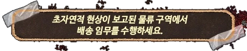
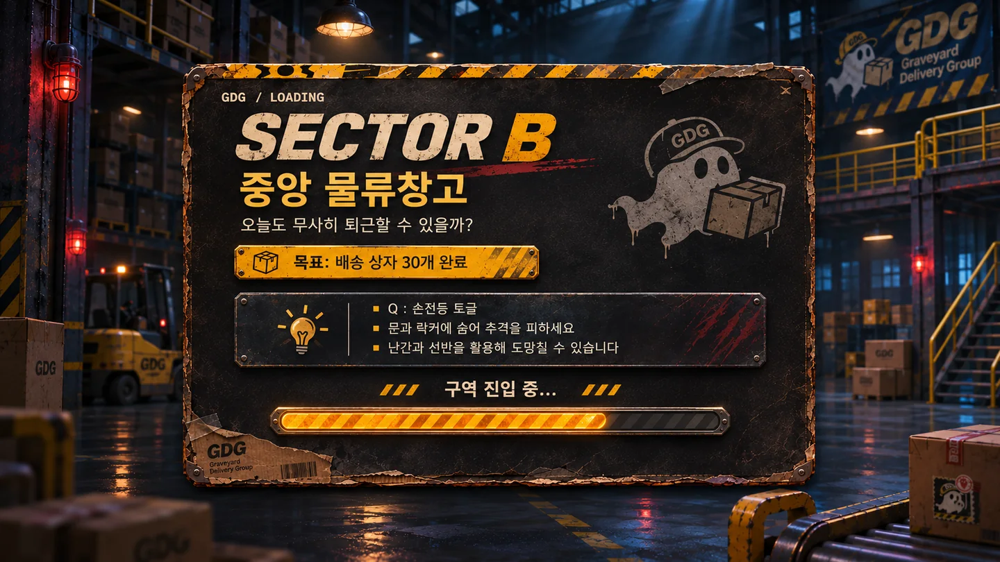

현재 임무
배송 상자 0 / 30
목표 · 가까운 출고대
B 메인 창고00:00:00
Q · 손전등 OFF
이동 상태이동 가능
소음 수치조용함
유령 경보감지 없음
조작 안내
W A S D 이동
Shift 달리기
C 앉기 / 은신
Space 점프
V 지상 / 공중 슬라이딩
Q 손전등
F 유인 신호
M 전체 지도
Esc 메뉴
전체 시설 지도M · 지도 확대 / 축소
빈손


구역 준비 중